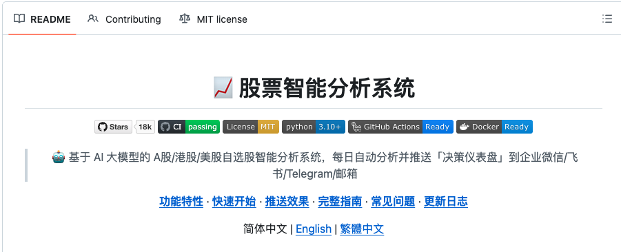
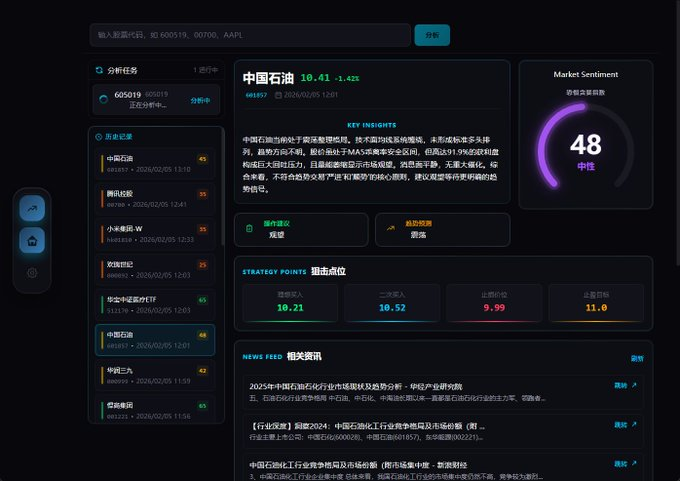
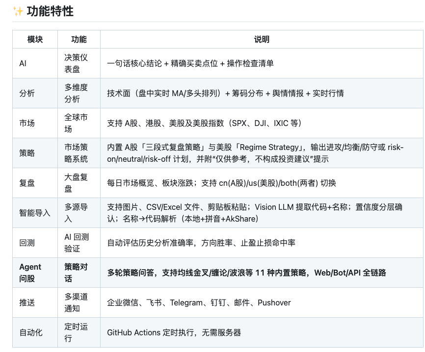

最近看到一个挺有意思的开源项目，叫 Daily Stock Analysis。它不是那种泛泛的“AI 选股助手”，而是更像一个会按时交作业的股票观察员：盯 A 股、港股、美股，收集行情、技术面、新闻，再在固定时间把一份决策仪表盘推给你。项目在 GitHub 上热度不低，README 里写得也很直白：支持 A/H/美股，能推企业微信、飞书、Telegram、邮件，还能用 GitHub Actions 定时跑起来。

先说我第一眼觉得它有意思的地方，不是“AI 分析股票”这五个字。现在带 AI 的股票工具太多了，很多看两眼就知道是个聊天壳子。这个项目稍微不一样的点在于，它试图把一堆本来分散的东西，硬捏成一个更接近“决策动作”的输出。
比如技术面、筹码分布、舆情情报、实时行情，这些东西它不是分栏摆给你自己看，而是最后压成一句核心结论，再配买入价、止损价、目标价和操作检查清单。README 里就是这么写的。
这个思路其实挺微妙的。
因为很多人做股票研究，最花时间的并不是找数据，而是把这些零散信号重新拼起来。均线看一眼，新闻扫一遍，板块情绪再翻一下，到最后脑子里还是一团浆糊。这个项目想做的，明显不是替你发财，而是替你省掉那段最机械、最重复的整理时间。它甚至还内置了 A 股“三段式复盘策略”和美股的 Regime Strategy，最后给你的不是一堆指标，而是偏进攻、均衡还是防守的计划。
另一个挺像 2026 年开源项目气质的点，是它开始认真处理“输入太麻烦”这件事。

你可以直接传一张自选股截图，让 Vision 模型识别代码加进监控列表；也可以开 Agent 模式，用“缠论分析 600519”这种自然语言去问，系统会去拉实时行情、K 线、技术指标和新闻，再把过程一步步跑出来。项目说明里还提到，它内置了 11 种策略，支持多轮问答，甚至可以自己加 YAML 策略文件扩展。
这个味道就有点不一样了。
它已经不是单纯“每天给你发一份报告”，而是在往一个半自动的研究助手走。你平时盯的票，它帮你守着；你临时想问的策略，它也能接。说白了，就是把本来很散的看盘动作，往一个相对统一的入口里收。

当然，这类工具最容易让人上头的地方，也恰恰是最该冷静的地方。
因为一旦它开始给出买入价、止损价、目标价，很多人会天然产生一种错觉：好像结论已经替你做完了。可这东西再怎么包装，本质还是“辅助研究”，不是代你承担风险。项目自己也写了，Agent 模式会调用外部模型和外部数据源，分析链条越长，越不适合被当成无脑执行器。
不过从开源工具角度看，它还是很讨巧。
一方面，支持 Gemini、Claude、OpenAI 兼容接口、DeepSeek 等模型，底层通过 LiteLLM 统一调用；另一方面，部署门槛压得很低，README 直接把 GitHub Actions 作为推荐方案，说 5 分钟、零成本、无需服务器。对很多本来就有点量化兴趣、但又懒得自己搭一整套服务的人来说，这种路径确实很顺手。
GitHub： ZhuLinsen/daily_stock_analysis